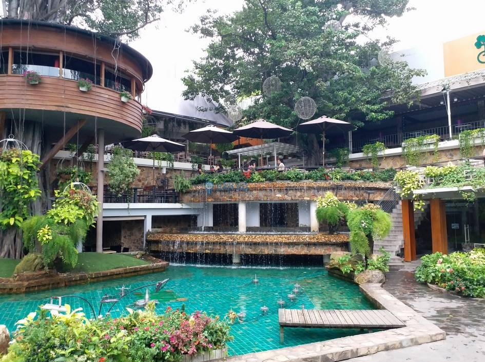
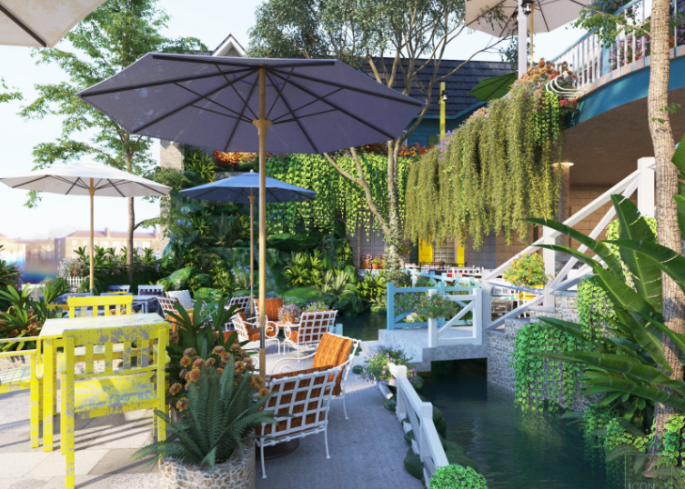
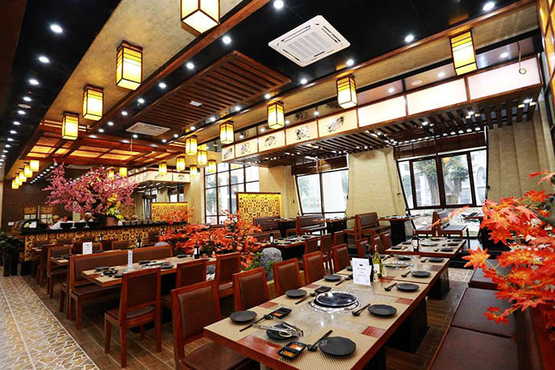
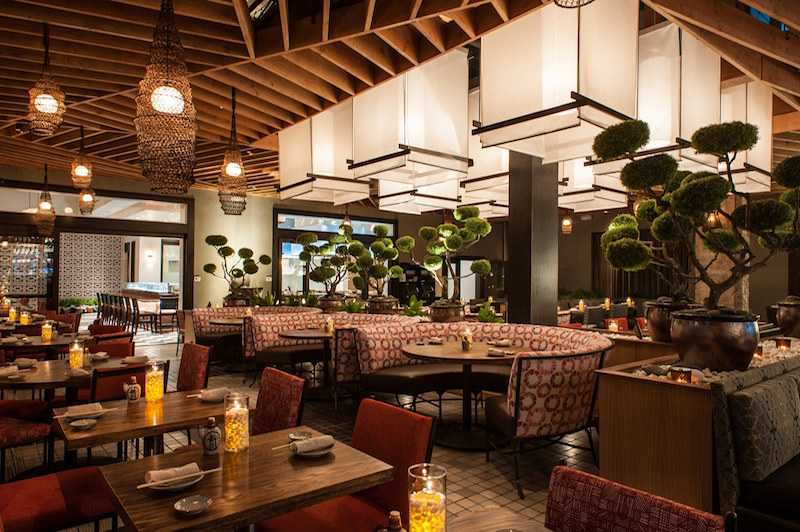
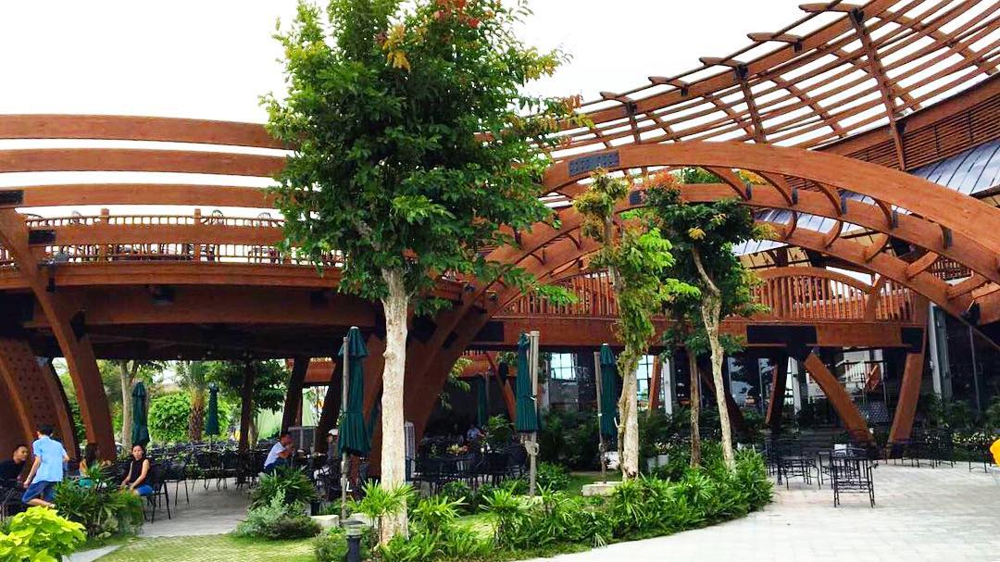

Giới thiệu
Về Victoria Coffee
Có người nói rằng, Hà Nội giống như một cô bé tuổi mới lớn dung mạo xinh đẹp nhưng lúc nào cũng thật khó chiều. Tiết trời ẩm ẩm ương ương. Mưa rồi lại nắng. Nắng rồi lại mưa.Lúc nào cũng xô bồ và hối hả. Tiếng còi xe và dòng người tưởng như không bao giờ dứt.Dẫu biết rằng cuộc sống là luôn luôn vận động và không ngừng di chuyển, nhưng bất giác có một khoảnh khắc nào đó trong ngày, ta lại muốn tìm về một sự bình yên rất đỗi giản dị, đã bị đánh mất hoặc quên lãng từ lâu. Đó có thể là một buổi sáng yên ả bên tách cà phê, nhẹ lòng thưởng thức một bữa điểm tâm tuyệt vời. Hay đó có thể là buổi chiều chìm đắm trong không gian tĩnh lặng của khoảng sân vườn đầy nắng,thả hồn mình lắng đọng sau một ngày làm việc mệt nhọc. Đến với Victoria Coffee, dường như những điều giản dị chỉ có trong mong muốn ấy hiện lên rõ rệt hơn trước mắt bạn.
Nằm ở ngay khu đô thị sầm uất Himlam, nhưng Victoria Coffee vẫn giữ nguyên những giá trị của một quán cà phê yên bình, chốn nghỉ ngơi cho những tâm hồn cần lắm một ngày lánh xa mệt mỏi. Ngay từ cái tên cũng chất chứa nét nhẹ nhàng, thanh tao, vì Victoria có nghĩa là “Mặt trăng”. Sự nhẹ nhàng, dễ cảm, hiền dịu của mặt trăng cũng là ý tưởng chủ đạo xuyên suốt thiết kế không gian của quán. Thật vậy, không gian sang trọng của kiến trúc Pháp có lẽ là điểm nhấn đặc biệt với những thực khách lần đầu đến với Victoria. Có hai không gian chính để khách có thể lựa chọn tán ngẫu với bạn bè, phòng máy lạnh (có cả khu vực không hút thuốc) và khu vực sân vườn rộng rãi và thoáng mát. Với thiết kế được đầu tư kĩ lưỡng về phần nhìn như thế, mọi khách hàng có thể cảm nhận rõ nét không gian Âu Châu lịch thiệp, quyến rũ, với nền văn hóa cà phê phồn hoa không thể lẩn nào đâu được.
Có thể nói, Victoria Coffee không đơn thuần là một quán cà phê truyền thống, tại nơi đây ngoài nhâm nhi tách cà phê thơm lừng, bạn còn có thể thưởng thức những món điểm tâm sáng, cơm trưa văn phòng cùng bạn bè, đồng nghiệp. Thực đơn của Victoria Coffee vô cùng đa dạng, đặc trưng nhất phải kể đến món điểm tâm đặc sản cùa xứ nghệ, súp lươn, miến lươn. Súp lươn, miến lươn với nước dùng sền sệt, vị cay nồng, ngọt đậm đà sẽ kích thích vị giác của những thực khách khó tính nhất, khiến họ có thể khởi đầu một ngày mới bận rộn với tâm trạng hưng phấn và sảng khoái nhất.
Ngoài ra,không thể kể đến những món uống hấp dẫn đã tạo nên tên tuổi của quán. Thật vậy, Victoria coffee luôn đặt chất lượng và sự an toàn của khách lên hàng đầu, vì thế nguồn Coffee luôn được xem xét kĩ càng từ khâu tuyển chọn, đảm bảo nguyên chất 100%. Vì thế, bạn còn chần chừ gì nữa mà không đến với Victoria Coffee?
Một điểm cộng không thể bỏ qua để lựa chọn Victoria Coffee là quán yêu thích nhất, đó chính là thời gian hoạt động kéo dài, từ 6h đến 12h đêm, khiến bạn có thể hòa mình vào không gian yên bình của quán bất cứ khi nào trong ngày, từ sáng sớm bình minh cho đến khi trời đã về khuya. Có thể nói, một quán cà phê đủ để lay động trái tim bạn không chỉ đơn thuần là một quán cà phê hài hòa về hình ảnh và chất lượng thức uống, mà ở tại đó bạn thấy lòng mình thư thả, có thể ngắm nhìn đường phố Hà Nội với con mắt yên bình và hạnh phúc nhất, Victoria Coffee chính là nơi để biến những ước mong ấy thành hiện thực, để cảm nhận rõ giá trị của thời gian, để nhận ra rằng giá trị của sự yên bình đem đến những thành công ngoài sức tưởng tượng, để hiểu rằng đôi khi điều tuyệt vời nhất, đến từ những điều giản dị bậc nhất.
